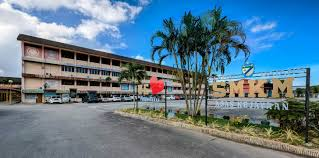
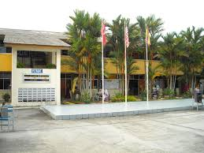

My Education

2023 - 2025
Diploma in Information Management
Universiti Teknologi MARA (UiTM) Cawangan Kelantan
Studying information systems, library science, records management, and digital content. Active in academic projects and group presentations.

2017 - 2022
Sijil Pelajaran Malaysia (SPM)
SMK Melor, Kelantan
Completed secondary school with strong results in core subjects. Involved in extracurricular activities and ICT-related programs.

2011 - 2016
Primary Education
SK Pak Badol
Built early academic foundation and participated in school-level storytelling competitions and sports day.